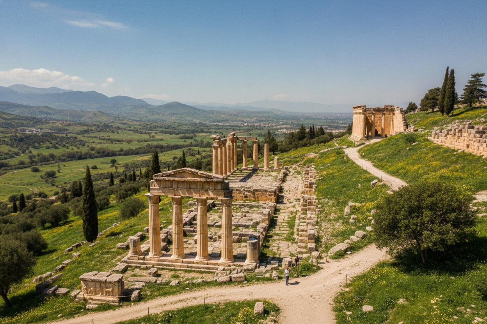
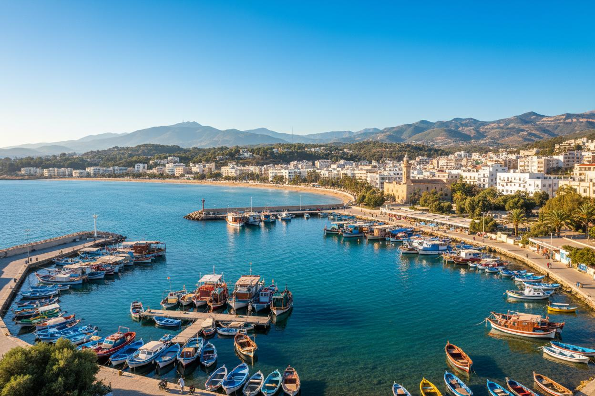

Derna
Between the Green Mountain and the sea
Derna is a port city in eastern Libya with a genuinely unique setting, wedged between the forested slopes of Jebel Akhdar (the Green Mountain), the Mediterranean Sea, and the desert beyond. Founded in the late 15th century by Muslims fleeing the Spanish Inquisition, Derna developed a distinctive Andalusian-influenced culture and long stood out as a centre of intellectual and artistic life in Cyrenaica, historically home to a cosmopolitan mix of communities and traditions.
Region
Cyrenaica
Distance from Tripoli
~1,180 km east
Known for
Andalusian heritage, mountain-meets-sea setting
Best for
History, coastal and mountain scenery
History of Derna
Derna was established in the late 15th century on the site of an earlier Greek colony by Andalusian Muslims fleeing persecution in Spain, who brought with them the architecture and culture of Al-Andalus and helped shape the city into a place where different faiths and nationalities long lived side by side. The city gained an early place in American military history through the Battle of Derna in 1805, the first battle fought by United States forces on foreign soil, during the First Barbary War. Under Ottoman administration, Derna later fell under the Karamanli dynasty before becoming part of the sanjak of Benghazi. Throughout the 20th century, Derna maintained a reputation for independent-mindedness, resisting both Italian colonial rule and later Gaddafi's government, whose decades of neglect left the city's infrastructure vulnerable. In September 2023, Derna suffered a catastrophic flood when two dams collapsed during Storm Daniel, devastating large parts of the city; recovery and rebuilding efforts continue.
Top Things to Do in Derna
The Old Medina
Derna's historic quarter reflects centuries of Andalusian, Ottoman, and local influence, with narrow streets, a historic mosque, church, and synagogue standing as reminders of the city's once-diverse population.
Al-Masjeed Al-Ateeq (the Old Mosque)
Derna's oldest mosque, restored in 1772 and vaulted with 42 small domes, a distinctive architectural response to the region's limited timber and stone.
The Corniche and coastline
Derna's seafront, framed by the green backdrop of Jebel Akhdar rising just behind the city, remains one of the most scenic coastal settings in eastern Libya.
Wadi Derna
The seasonal river valley that gives the city its name and its distinctive green surroundings, flanked by the forested slopes of the Green Mountain.

Best Time to Visit & Getting There
Derna's coastal-meets-mountain setting gives it a pleasant Mediterranean climate, best enjoyed in spring and autumn. Visitors should check current conditions before travelling, given the city's ongoing recovery from the 2023 flooding, and travel is typically arranged by road from Bayda or Benghazi.
Derna's story is one of resilience as much as history, and its unique setting between mountain and sea remains striking even as the city continues to rebuild.